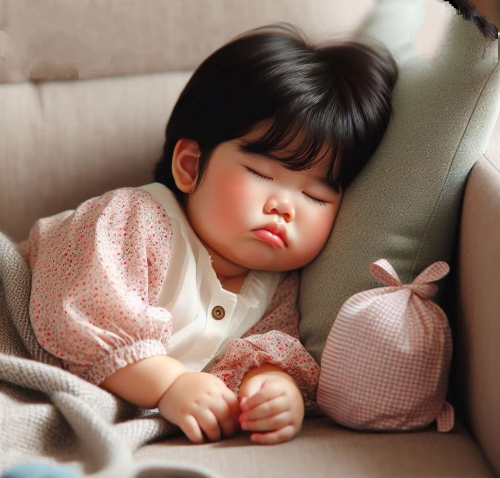

Determinar si su hijo es superdotado no es un trabajo fácil. Como probablemente ya haya descubierto, hay muchísimas definiciones, características, evaluaciones, teorías, una abundancia de información. Para ayudar a los padres a descifrar parte de la información contradictoria, el Instituto Davidson ha escrito este artículo resumiendo las características de los niños superdotados, la diferencia entre exámenes y evaluaciones, puntos para considerar si su hijo precisa tomar una prueba o ser evaluado, diferentes tipos de exámenes que pueden ser utilizados, y sugerencias para encontrar un profesional en el caso de que usted decida buscar una evaluación completa.
Los niños superdotados son alumnos cuyas capacidades, talentos o potencial son tan extraordinarios que requieren disposiciones especiales para satisfacer sus necesidades educativas. Estos estudiantes se encuentran en el 3-5% superior de su grupo de edad en su(s) área(s) específica(s) de superdotación.
¿Qué características tiene un niño superdotado?
Aprenden autónomamente y hacen transferencias de conocimientos a otras áreas con naturalidad. Elevada comprensión de ideas complejas. Predominio del pensamiento lógico y racional. Alta capacidad de observación.
Los niños superdotados pueden demostrar algunos, pero no todos de estos rasgos, cada niño es diferente. Para determinar el alcance de la capacidad de su hijo, una prueba o evaluación completa puede proveer algunas de las respuestas que usted busca. Porque no hay mandatos federales o políticas nacionales que requieran la educación para superdotados, es importante que los padres revisen cuales políticas o procedimientos de identificación de la superdotación existen en su región antes de buscar una prueba o evaluación.
Durante el sueño, el cuerpo trabaja para apoyar una función cerebral saludable y mantener la salud física. En niños y adolescentes, el sueño también promueve el crecimiento y el desarrollo. No dormir lo suficiente con el tiempo puede aumentar el riesgo de problemas de salud crónicos (a largo plazo).¿Qué tan importante es el sueño para los niños? Al igual que la alimentación, el sueño es necesario para la supervivencia. El sueño le da al cuerpo un descanso y le permite prepararse para el día siguiente. Es como darle al cuerpo unas pequeñas vacaciones. El sueño también le da al cerebro la posibilidad de resolver las cosas.
¿Cómo influye el sueño en el desarrollo del niño?